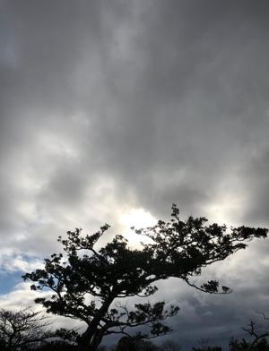
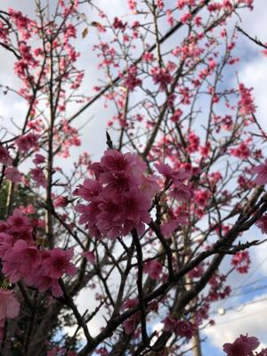

うるがいの話 ある日
最新: デビットカード【うるがいの話 ある日】とは 一日だけのプログです
『うるがいの話』の最新一日だけのプログで、通信料が少なく経済的だ。カニの画像をクリックすると全ての日付が載る『うるがいの話』サイトを表示します
|
|
【うるがいの話】 うるがい(ｳﾙｶﾞｲ urugai)とは、『もずくがに』の名前でとても大きくなります。 |
|---|---|
|
|
【カミマヤーの話】 猫のことを方言でマヤーといいます。カミマヤー（kamimayaa）とは、神の猫のことです。 |
|
【たながぁの音楽】 たながぁ（ﾀﾅｶﾞｰtanagaa）とは手長えびのことで、何種類かあり大きいのは車 エビぐらいになります。 |

|
【ぶながぁの話】 ぶながー(bunagaa)とは、赤い髪の毛、赤い身体、そして身長は１ｍ２０ｃｍ ぐらい、川の蟹を食べているの目撃された。場所は沖縄県国頭郡大宜味村のと ある村僕の隣近所に住んでいる爺さんから、聞いた話です。 |
|
|
【ギーマの話】 ギーマ(giima)とは、山原の里山に咲くスズランに似た、 花を付けます。実は食べられます、 気が付くと口の周りが紫になっています。 |
2022年02月20日 (日）デビットカード
17:21

おととい、子供が使ったこともない琉銀デビットカードが、不正利用された。
直ぐにカードは停止した、たまたまネットの通帳をみていると、口座から１０
万ほど引き落とされてびっくり、子供が家に来たときにネットの通帳を見せて
もらったが９時に一度１，０９９円引き落とされて数分後に戻されている、そ
して３０分後に１０万引き落とされている。明らかに怪しそうな取引である。
子供は、海外から利用されているのではないかとデビットカードの大元の三菱
何たらから銀行から、伝えもらった情報である。しかし、ことによって無職の
人から・・・、デビットカードは銀行で勧められた利用しないにもかかわらず
加入したとのこと。さて、明らかに不正利用されているが戻ってくるのだろう
か。ネットでは、 『本当は怖いデビットカード？？ 不正利用 被害にあった
人に直接聞いてみた』 ん、確かに。

昨日の夜８時過ぎ、ヨメのお母さんを救急に連れていく。金曜日転んだ（本人
が言っているだけで定かではない）のが原因なのか、吐き気が収まらず食事が
とれないので心配して連れて行く。病院では、脳梗塞じゃないかと言われ、ヤ
バ！となったが一応ＣＴでは問題なかった。転んで痛いと言っている腰も、圧
迫骨折らしい。でも、結局薬も出ず様子を見ましょうという事になった。吐き
気で苦しんだ経験の私は、せめて吐き気止めでも処方して貰った方が良かった
のにと思ったが、病院ではコロナのため、付き添いは一人だけと制限されてい
るのでサポート出来なかった。お母さんは、今日も吐き気が収まらず食事をと
れないのでヨメが常駐サポートしている。明日は、病院へ連れて行かなければ
ならないが、・・・介護は続くのである。
１７時１３分 ビットコインの総資産 ￥１２、９１５↓投資はするな？